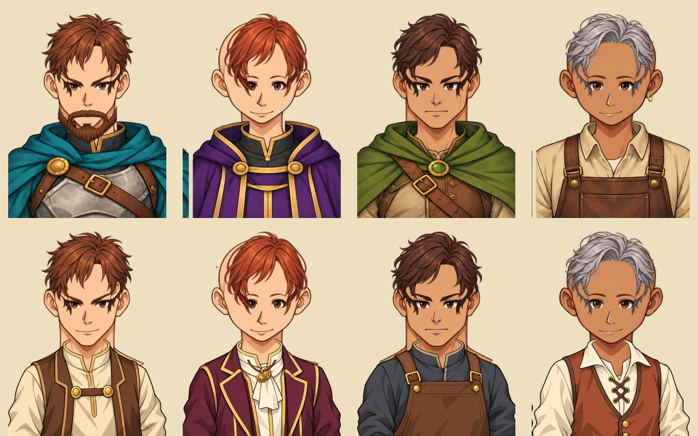

Des héros cohérents avec leurs sprites et des PNJ assemblés à partir de calques réutilisables.
Comprendre ce que cela implique
Les portraits fixes des six héros définissent la palette et le traitement anime. Le Mage masculin abandonne le chapeau pointu au profit d’une capuche rabattue, également présente sur son sprite.
Les PNJ génériques superposent des pièces transparentes sur un décor lié au lieu. Un identifiant permanent produit une composition stable ; les personnages narratifs gardent leur illustration spécifique.
Il s’agit uniquement de présentation : les caractéristiques, déplacements, productions et récompenses restent validés par le serveur. L’atelier de portraits permet d’inspecter plusieurs assemblages sans modifier une partie.



Dans cet article
Détails de référence
Texte de référence mis en forme et conservé dans l’historique de cet article. Les paragraphes datés peuvent décrire une évolution ou une étape antérieure.
Disponible depuis le 24 octobre 2026
Les six portraits des héros suivent une direction anime fantasy : contours nets, couleurs lisibles et ombres légères. Ils conservent les costumes des sprites : cape bleu pétrole du Guerrier, violet et or du Mage et cape verte de l'Éclaireur. Le Mage masculin porte désormais les cheveux courts dégagés et une capuche rabattue. Son sprite de marche utilise aussi cette tenue, sans chapeau pointu. La Mage féminine conserve son chapeau. Les anciens fichiers restent archivés.
Les portraits des héros sont des illustrations fixes. La personnalisation de leur visage par le joueur et la composition de leurs animations ne sont pas proposées. Les calques dérivés de cette direction artistique servent aux PNJ génériques.
Bibliothèque de PNJ v1
Chaque portrait superpose un décor, une base de tête avec cou, une tenue, des yeux avec sourcils, un nez, une bouche, une coiffure et un accessoire facultatif. Les images transparentes partagent une toile de 512 × 640 pixels et des points d'ancrage communs. Il existe quatre bases de tête, quatre coiffures, quatre variantes de chaque trait du visage, huit tenues et quatre accessoires : barbe, cicatrice, boucle d'oreille et pendentif. L'absence d'accessoire est aussi possible. La barbe ne se combine qu'avec les deux bases masculines.
Les chefs génériques, les responsables de mine, carrière et chantier forestier, les responsables de fort, les forgerons, les taverniers et les PNJ recrutables en taverne utilisent ces couches. Les PNJ recrutables apparaissent en vignette dans les choix de conversation. Les illustrations narratives définies dans un scénario ou dans l'éditeur restent prioritaires et ne sont pas remplacées.
Identité stable et décor
Un descripteur de présentation sérialisable indique la version et l'indice de chaque pièce. Il est dérivé de l'identifiant permanent du PNJ, sans tirage aléatoire à l'ouverture de la fenêtre. Un chef utilise l'identifiant de son lieu ; un forgeron et un tavernier ont des identités distinctes dans le même lieu. Un spécialiste recrutable conserve ses traits lorsqu'il change de taverne ou après une reprise. Les indices et le calcul v1 doivent rester stables ; un nouveau catalogue devra utiliser une nouvelle version sans réordonner les pièces existantes.
Le décor suit le type de lieu : village, ville/capitale, fort, mine, carrière ou forêt/chantier/camp. Les conversations du forgeron et du tavernier montrent leur atelier ou leur salle. Les PNJ recrutables sont présentés dans la taverne. Les tenues suivent la fonction : travailleur, responsable civil, artisan ou aventurier.
Architecture et vérification
app/js/core/portrait-catalog.js définit les références et les descripteurs sans DOM. Les services existants de conversation et de taverne exposent les apparences. app/js/ui/portrait-view.js valide le descripteur puis affiche les couches ; il n'accepte aucun chemin d'image arbitraire dans ce descripteur. Les portraits spécifiques continuent d'utiliser leur référence habituelle. Le navigateur ne reçoit ici aucun pouvoir de calculer des coûts, récompenses, déplacements ou combats : toutes les validations du jeu restent sur le serveur, en GPS comme sur carte fictive. Cette évolution ne change aucune règle du jeu.
L'atelier app/portrait-lab.html présente les héros, douze assemblages de PNJ, plusieurs lots d'identités et les calques séparés. Il ne modifie aucune partie. Les scripts prepare-portrait-assets.ps1 et prepare-mage-sprite.ps1 découpent les atlas générés, alignent les pièces et mesurent les rectangles alpha du sprite. Les sources de travail sont conservées dans app/assets/portraits/modular/sources/. La génération artistique utilise l'outil intégré imagegen ; le découpage et les aperçus assemblés sont déterministes. Les anciens assets ne sont pas supprimés.